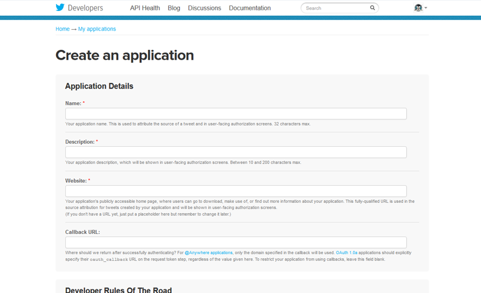
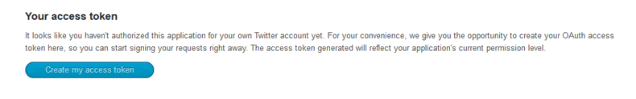
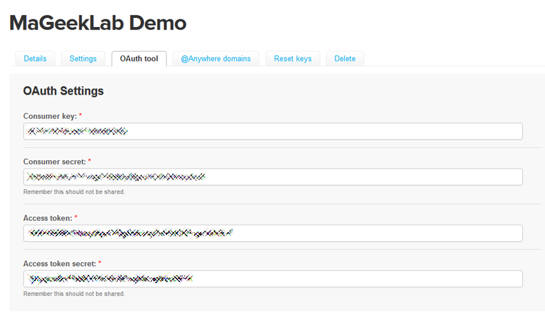
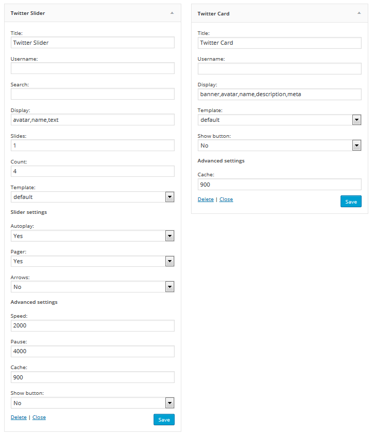

Tweetlab By MaGeek Lab
Email: hello@mageeklab.com
Thank you for purchasing this plugin!
If you have any questions that are beyond the scope of this help file,
please feel free to email us on our user page contact form in CodeCanyon.
Thanks you so much!
Installation
To install the plugin go to Plugins > Add New > Upload and select the mgl-twitter.zip file
Activate the plugin and ¡Congratulations! The plugin have been installed.
You can also install the plugin via FTP uploading the folder mgl-twitter to your plugins folder
Creating the Twitter App
First of all, go to Settings > Tweetlab
In order to use this plugin you first need to create a Twitter Application in the Twitter api site
You can pull info for any other user you want, so you can create the app with any user you want Fill the fields with your site information (just the required ones), accept terms and submit yout App (Sometimes the captcha can be a pain in the ass)
After creating your application you will be in your App home page, scroll to bottom, there you will find a button that allows you to create your acces token, just click it
Then scroll up to the App menu and go to the "OAuth tool" tab
Copy the four fields of the app to your WordPress site (consumer key, consumer secret, access token, access token secret)
That's all, save settings, you are ready to go!
Shortcodes
To display Twetts use our amazing shortcodes:
Not knowing what a shortcode is? Take a look here
Tweetlab supports both Visual Composer and Layers
So if you are using one of them you don't need to worry, the customization is easy as pie
Twitter Carousel
To display a twitter carousel you just need to fill the username or search field
User
[mgl_twitter username="mageeklab"]
Search
[mgl_twitter search="#codecanyon"]
You can also combine both to filter by user and hashtag
User & search
[mgl_twitter username="mageeklab" search="#codecanyon"]
You can also sepparete with commas users and search to include tweets from both users / searches
Multiple users
[mgl_twitter username="mageeklab,envato"]
Multiple searches
[mgl_twitter search="#codecanyon,#themeforest"]
Custom Query
The Twitter API is pretty big and has so many options so we've included a field for this cases when you need to do an advanced query, see all the documentation on Twitter API website, also check some examples:
[mgl_twitter custom_query="traffic ?"]
This will display a carousel of tweets asking for traffic
[mgl_twitter custom_query="@envato"]
This will display a carousel of tweets mentioning envato
[mgl_twitter custom_query=#codecanyon -#themeforest"]
This will display a carousel of that contain #codecanyon but not #themeforest
Note: The custom query will overwrite the user & search parameter, but not the count one, so no need to include it in your custom query
Note 2: To avoid conflicts with Wordpress' shortcodes, use single quotes instead of doubles ones on custom_query parameter value
Twitter User Card
A Twitter Card shows the relevant info of a Twitter account, the only required parameter is the username itself
[mgl_twitter_card username="mageeklab"]
Parameters
Adding this extra parameters to your shortcode will let you customize how the gallery looks (Some parameters are not available in the single video shortcode)
Twitter Carousel
| Parameter | Possible values | Description |
|---|---|---|
| count | Number | Total number of tweets to display |
| cache | Number | Interval time the tweets will be stored before pulling new ones, defaults to 900 milisecons (15 min) |
| display | String | Comma sepparated list of elements to show for each tweet, by default is "avatar,name,text" |
| template | Check the templates section | The template to use |
| direction | lfr / rtl / vertical | Comma sepparated list of elements to show for each tweet, by default is "avatar,name,text" |
| slides | Number | Number of visible tweets at the same time |
| autoplay | true / false | Let the carousel begin animation alone |
| pause | Number | Time in milisecons between slides |
| speed | Number | Speed in milisecons of the slide animation |
| controls | true / false | Display arrows |
| pager | true / false | Display dots pager |
| button (Deprecated) | true / false | Display the user follow button or the tweet button () |
| avatars (Deprecated) | true / false | Use display instead. Display the avatars of the users |
| userinfo (Deprecated) | true / false | Only avaible in user shortcode, display the user's info in top of the slider |
| width (Deprecated) | Number | Slide max-with, just necessary if the slider doesn't fill all the space of your website, amount in px but without the "px" |
| height (Deprecated) | Number | Slide height, setup a height per each slide, amount in px |
Twitter Card
| Parameter | Possible values | Description |
|---|---|---|
| display | String | Comma sepparated list of elements to show for each tweet, by default is "banner,avatar,name,description,meta" |
| template | Check the templates section | The template to use |
| cache | Number | Interval time the tweets will be stored before pulling new ones, defaults to 900 milisecons (15 min) |
| button | true / false | Display the follow button |
| description (Deprecated) | true / false | Use display instead. Display the user's description |
| usermeta (Deprecated) | true / false | Use display instead. Display the user's meta |
Templates
Twitter slider comes with some pretty cool templates, this are the current options:
- default
- square
- balloon
- card
You can create your own custom templates for Twitter slider, to do so let's say you set the parameter template to custom
[mgl_twitter template="custom"]
Then you can add your own styles to the gallery with the base class mgl_twitter_template_custom
If you need to customize/overwrite the code of the template you can create a folder inside your theme with the name tweetlab and another folder inside it with the name of the template you want, in this case custom
Copy the original files from templates/default inside the plugin's folder into the tweetlab/custom inside your theme, you just need to copy the files you want to customize
The logic of the plugin when searching for a file of the template custom template is as it follows:
- The plugin will look for the file inside the theme folder
- The plugin will look for the file inside the plugin folder
- The plugin will load the default theme file
Widgets
The same shortcodes ara available as WordPress Widgets with all the same parameters
FAQ
The styles looks horrible, can I do?
Check that the shortcode is not wrapped into < pre > tags, also check that any styles of your theme are causing problemes with the ones of the plugin, of course if you have any issue contact us via de comments section
Which library are you using for the slider?
The Owl Carousel by Bartosz Wojciechowski and the BxSlider by Steven Wanderski
Do I need jQuery in order to make this plugin work?
Yes, the plugin itself loads jQuery, but you can disable it in the configuration page